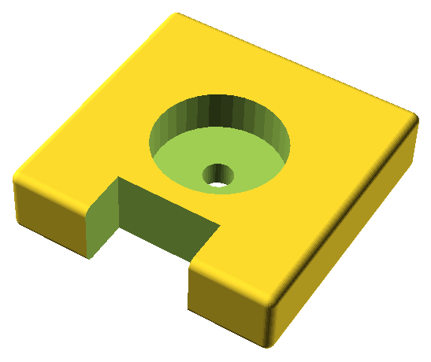

3D設計
設計時の留意点
- 3Dプリンタによって最大造形サイズが決まっているため、大きいものが必要な場合は複数の部品を組み合わせる。
- FDM（熱溶解）方式の3Dプリンタの場合は、宙に浮いた部分があると積層時に重力の影響を受けて変形してしまうため、
向きを変える・形状を変える・複数部品に分けるなど、宙に浮いた部分が生じない構造にする。
- 部品どうしをはめ込む場合には、若干隙間が生じるサイズで設計する。経験的にはノズル径と同じ0.4㎜か少し小さい0.3の隙間を設けると具合が良い。
- 力が加わる平面は湾曲しないように支える部品を追加するか十分な厚みを持たせる。
設計例
